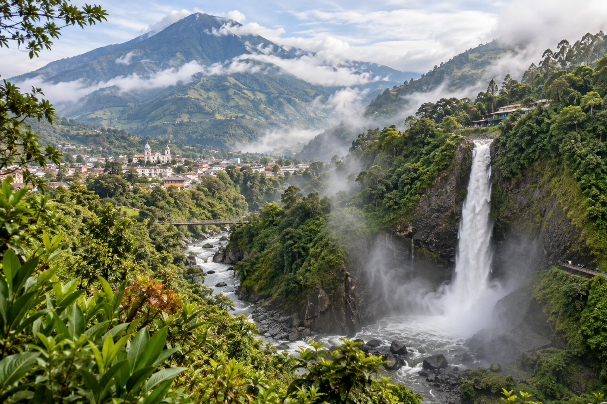
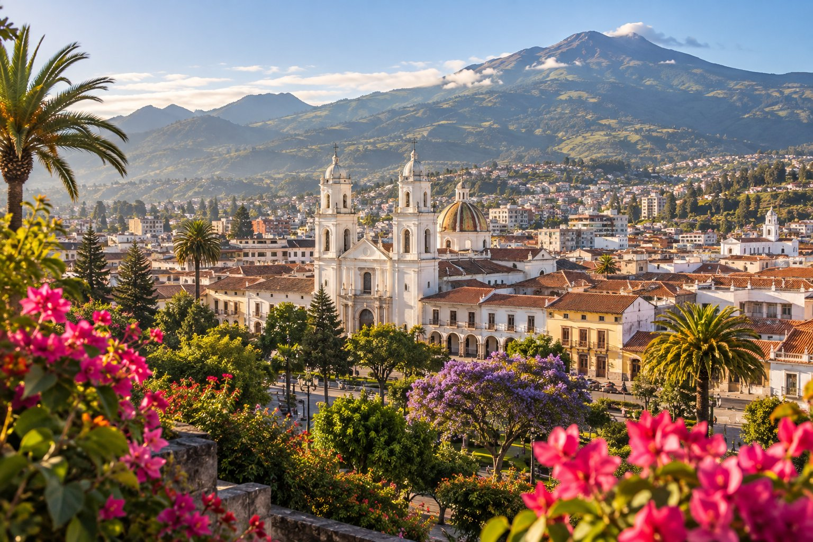
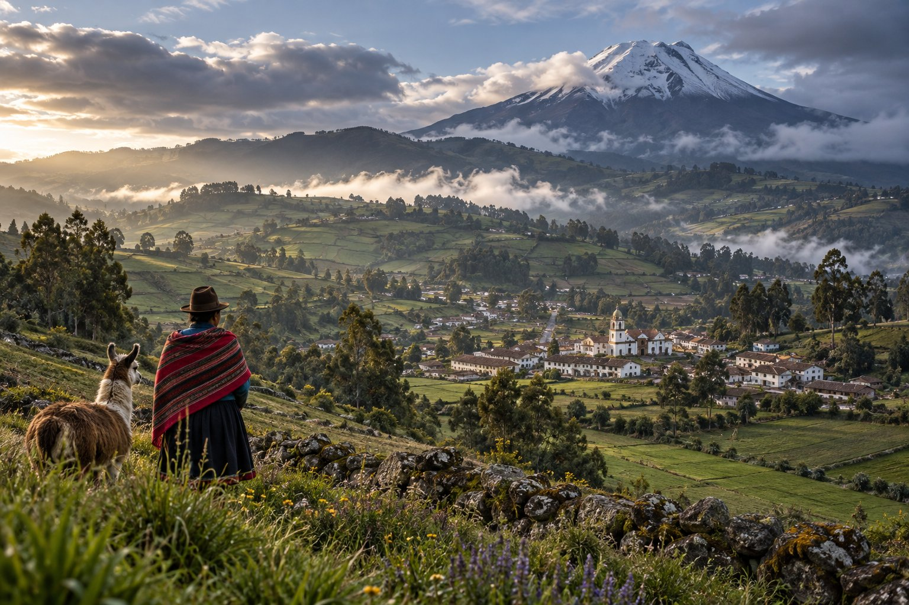

01 / AVENTURALa aventura
está en el camino.
Cascadas, senderos y planes para quienes prefieren vivir el viaje a toda velocidad.
Explorar destinoSIERRA CENTRO · ECUADOR
Montañas que inspiran, caminos que sorprenden y una cultura que te recibe con los brazos abiertos.
Encuentra tu próximo destinoEn el corazón de los Andes ecuatorianos, Tungurahua reúne aventura, tradición y paisajes que cambian a cada paso. Aquí cada cantón tiene algo propio que contarte.
Busca inspiración y encuentra un destino que vaya contigo.

01 / AVENTURACascadas, senderos y planes para quienes prefieren vivir el viaje a toda velocidad.
Explorar destino
02 / CULTURAUna ciudad de flores, frutas, cultura y encuentros que se quedan contigo.
Explorar destino
03 / TRADICIÓNTradiciones, paisajes andinos y expresiones culturales con carácter único.
Explorar destino 04 / NATURALEZA
04 / NATURALEZAUn rincón tranquilo para disfrutar del paisaje, los sabores y el aire de montaña.
Explorar destinoNo encontramos destinos con esa búsqueda. Prueba con otra palabra o categoría.